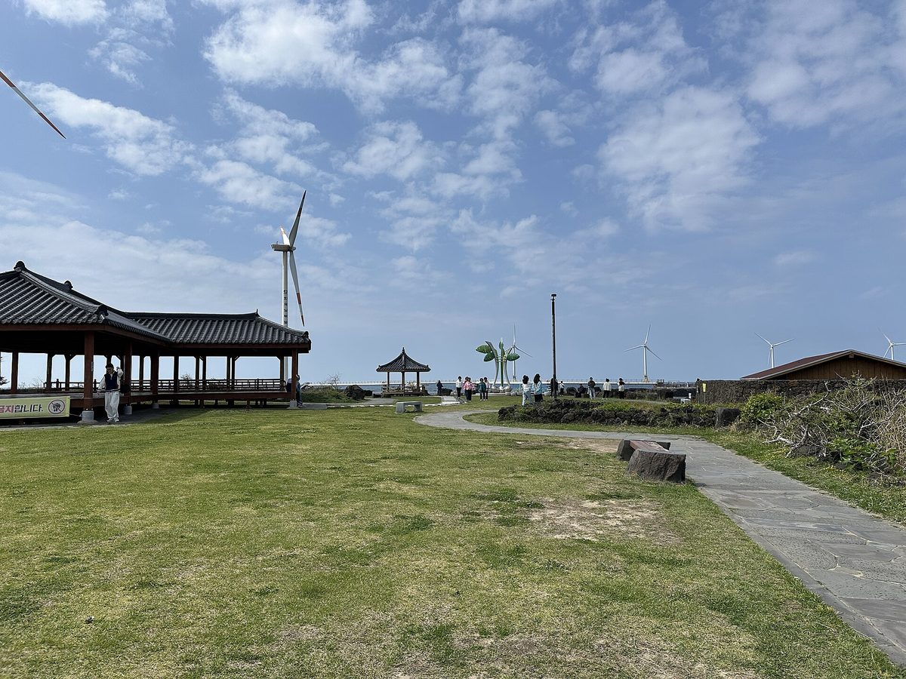

국회서 동 지역 햇빛소득마을 요구 나오자 제주 동 지역 문의 잇따라…출력제어 탓 마을마다 억대 ESS 부담이 걸림돌

제주도 관계자, 행안부가 의견 받는 중이며 연내 기준 발표 예정이라고 전해…확대 여부는 한전 협의 남아 예측 일러, 애월 용흥리·남원 위미1리 선정·3차 공모 이달 말 마감
읍·면·리로 묶여 있는 햇빛소득마을 공모 대상을 동 지역까지 넓히자는 요구가 국회에서 나온 뒤 제주에서도 동 지역 마을의 문의가 잇따르고 있다. 박정현 더불어민주당 의원(대전 대덕구)은 26일 행정안전부 종합감사에서 사용 전력의 75%를 재생에너지로 채우고도 행정구역이 동이라는 이유로 대상에서 빠진 대전 대덕구 미호동을 예로 들며 농촌 성격의 동 지역까지 공모 대상을 넓히라고 요구했고, 정부는 검토하겠다는 뜻을 밝혔다. 제주도 관계자는 행안부가 의견을 받고 있으며 올해 안에 관련 기준을 마련해 발표할 예정이라고 전하면서도 "정부만이 아니라 한전 등과의 협의도 해야 하기에 아직 확대 여부를 예측하기는 이르다"고 말했다. 제주에서는 1차 공모에서 제주시 애월읍 용흥리가 정부 1호 선정지가 돼 320kW 규모 태양광이 들어설 예정이고, 2차 공모에서는 서귀포시 남원읍 위미1리가 뽑혔으며, 3차 공모는 이달 말까지 진행된다. 제주만의 걸림돌은 계통 포화에 따른 출력제어로, 낮에 만든 전기를 곧바로 팔기 어려워 수억 원대 에너지저장장치(ESS)를 함께 갖춰야 하는 탓에 자금이 넉넉지 않은 마을 공동체에는 억대 추가 비용이 큰 부담이 된다. 도는 현장지원단을 꾸려 계통 연계가 실제로 가능한 마을을 먼저 가려내고 맞춤형 공모 지원을 하고 있다.
시민에너지 관점
동 지역 마을의 문의가 잇따른다는 것은 햇빛소득마을을 바라는 주민이 행정구역 경계 밖에도 있다는 뜻이다. 동 지역은 땅이 좁고 도시에 가까워 주민 발전 사업이 맞지 않는다는 우려가 있지만, 오스트리아 빈에서는 시 소유 에너지 공기업이 시민에게 태양광 패널을 나눠 팔고 그 패널을 빌려 쓰며 수익을 돌려주는 시민 태양광발전소를 도시 안 여러 곳에 세워 도시 주민도 발전 수익의 주인이 되게 했다. 출력제어 때문에 ESS가 꼭 필요하다면 그 비용을 마을마다 따로 지게 할 것이 아니라 공공이 공동 저장설비를 깔거나 설치비를 지원해, 남는 낮 전기를 마을 소득으로 바꾸는 구조를 만들어야 한다. 행안부는 연내 기준에 농촌 성격의 동 지역을 담고, 제주처럼 계통이 막힌 곳에는 ESS 지원을 함께 묶어 내놓아야 한다.
출처: 제주매일 2026-10-27 조문호 원문 보기
国会で洞地域への太陽光所得村拡大を求める声、済州でも洞地域から問い合わせ相次ぐ…出力制御で集落ごとに億ウォン単位のESS負担が壁
済州道関係者、行政安全部が意見を集めており年内に基準を発表する予定と説明…拡大の可否は韓電との協議が残り予測は早い、涯月・龍興里と南元・為美1里が選定、第3次公募は今月末締め切り
邑・面・里に限られている太陽光所得村（ヘッピッ所得村）の公募対象を洞（都市部の行政区域）にまで広げるよう求める声が国会で上がった後、済州でも洞地域の集落からの問い合わせが相次いでいる。共に民主党のパク・ジョンヒョン議員（大田大徳区）は26日、行政安全部の総合監査で、使用電力の75%を再生可能エネルギーで賄いながら行政区域が洞であるという理由で対象から外れている大田大徳区渼湖洞の例を挙げ、農村の性格を持つ洞地域まで公募対象を広げるよう求め、政府は検討する考えを示した。済州道の関係者は、行政安全部が意見を集めており年内に関連基準をまとめて発表する予定だと伝える一方、「政府だけでなく韓電などとの協議も必要で、拡大するかどうかを予測するのはまだ早い」と述べた。済州では第1次公募で済州市涯月邑龍興里が政府の「1号」選定地となり320kW規模の太陽光が建設される予定で、第2次公募では西帰浦市南元邑為美1里が選ばれ、第3次公募は今月末まで行われている。済州特有の壁は系統の飽和による出力制御で、昼間に発電した電気をすぐに売ることが難しく、数億ウォン規模のエネルギー貯蔵装置（ESS）を併設しなければならないため、資金力の乏しい集落共同体には億ウォン単位の追加費用が大きな負担になる。道は現場支援団を設け、系統連系が実際に可能な集落を先に選別し、それぞれに合わせた公募支援を行っている。
市民エネルギーの視点
洞地域の集落から問い合わせが相次いでいるのは、太陽光所得村を望む住民が行政区域の線の外にもいることを示している。洞地域は土地が狭く都市に近いため住民による発電事業には向かないという懸念もあるが、オーストリアのウィーンでは市が所有するエネルギー公営企業が市民に太陽光パネルを分けて販売し、そのパネルを借り受けて収益を還元する市民太陽光発電所を市内各地につくり、都市の住民も発電収益の担い手になれるようにした。出力制御のためにESSが欠かせないのなら、その費用を集落ごとに背負わせるのではなく、公共が共同の蓄電設備を整えるか設置費を支援し、余った昼間の電気を集落の所得に変える仕組みをつくるべきだ。行政安全部は年内の基準に農村の性格を持つ洞地域を盛り込み、済州のように系統が詰まった地域にはESS支援を一緒に打ち出すべきだ。
出典: 済州毎日 2026-10-27 チョ・ムンホ 原文を読む
国会要求把阳光收入村扩大到洞地区后，济州洞地区咨询接连不断…因限电，每个村庄需承担上亿韩元储能费用成为障碍
济州道有关人员称行政安全部正在征求意见、计划年内公布标准…是否扩大还需与韩电协商、现在预测为时尚早，涯月龙兴里和南元为美1里已入选，第三批申报本月底截止
国会提出把仅限于邑、面、里的"阳光收入村"申报对象扩大到洞（城市行政区）之后，济州洞地区的村庄也接连前来咨询。共同民主党议员Park Jeong-hyun（大田大德区）26日在对行政安全部的综合监查中，以用电75%来自可再生能源、却因行政区划为洞而被排除在外的大田大德区渼湖洞为例，要求把申报对象扩大到具有农村特点的洞地区，政府表示将予以研究。济州道有关人员表示，行政安全部正在征求意见，计划年内制定并公布相关标准，但也指出"不仅要与政府、还要与韩电等协商，现在预测是否扩大还为时尚早"。在济州，第一批申报中济州市涯月邑龙兴里成为政府"1号"入选地，将建设320kW规模的太阳能设施；第二批中西归浦市南元邑为美1里入选；第三批申报进行到本月底。济州特有的障碍是电网饱和导致的限电（出力控制）：白天发的电难以立即出售，必须加装价值数亿韩元的储能设施（ESS），对资金不足的村庄共同体来说，上亿韩元的额外费用是沉重的财务负担。道政府组建了现场支援团，先筛选出确实能够并网的村庄，并提供有针对性的申报支持。
市民能源视角
洞地区村庄咨询不断，说明希望参与阳光收入村的居民也存在于行政区划之外。有人担心洞地区土地狭小、靠近城市，不适合居民发电项目；但在奥地利维也纳，市属能源公营企业把太阳能板分售给市民，再租回这些面板并返还收益，在市内多处建起市民太阳能电站，让城市居民也成为发电收益的主人。如果限电使储能设施必不可少，就不应让每个村庄各自承担费用，而应由公共部门建设共用储能设施或补贴安装费用，建立把白天富余电力转化为村庄收入的机制。行政安全部应在年内公布的标准中纳入具有农村特点的洞地区，并为济州这样电网拥堵的地区一并推出储能支持。
来源: 济州每日 2026-10-27 Jo Mun-ho 查看原文
After lawmaker calls for sunlight income villages in urban dong districts, Jeju's dong neighbourhoods line up with inquiries — but curtailment means costly battery storage for each village
Jeju official says the interior ministry is gathering views and plans to announce criteria within the year, but it is too early to predict an expansion pending talks with KEPCO; Aewol's Yongheung-ri and Namwon's Wimi 1-ri selected so far, third call closes at month's end
Villages in Jeju's dong districts — urban administrative areas — have been sending a stream of inquiries since a call was made in the National Assembly to open the sunlight income village programme, now limited to eup, myeon and ri (towns, townships and rural villages), to dong areas as well. At the Ministry of the Interior and Safety's comprehensive audit on Oct. 26, Democratic Party lawmaker Park Jeong-hyun (Daedeok-gu, Daejeon) cited Miho-dong in Daedeok-gu, which meets 75% of its electricity use with renewables but is excluded because it is administratively a dong, and called for the programme to cover dong areas with a rural character; the government said it would review the idea. A Jeju provincial official said the ministry is collecting opinions and plans to prepare and announce criteria within the year, but added that "consultations are needed not only with the government but also with KEPCO and others, so it is still too early to predict whether it will be expanded." In Jeju, Yongheung-ri in Aewol-eup, Jeju City, became the government's first selected site in the first call and is set to host 320kW of solar, Wimi 1-ri in Namwon-eup, Seogwipo, was chosen in the second call, and the third call runs until the end of this month. Jeju's particular obstacle is curtailment caused by a saturated grid: because power generated during the day is hard to sell right away, projects must add energy storage systems (ESS) costing hundreds of millions of won, an extra cost that weighs heavily on village communities short of funds. The province has set up a field support team that first screens villages where grid connection is actually feasible and then offers tailored help with applications.
Citizen Energy View
The stream of inquiries from dong neighbourhoods shows that residents who want a sunlight income village also live outside the administrative lines drawn for the programme. Some worry that dong areas are too cramped and urban for resident-run generation, but in Vienna the city-owned energy utility has built citizen solar power plants across the city by selling panels to residents, leasing them back and paying a return, so that city dwellers too can share in generation income. If curtailment makes storage unavoidable, the cost should not be left to each village; the public sector should install shared storage or subsidise it, creating a system that turns surplus daytime power into village income. The interior ministry should include rural-character dong areas in the criteria it announces this year and pair them with storage support for places like Jeju where the grid is congested.
Source: Jeju Maeil 2026-10-27 Jo Mun-ho Read the original